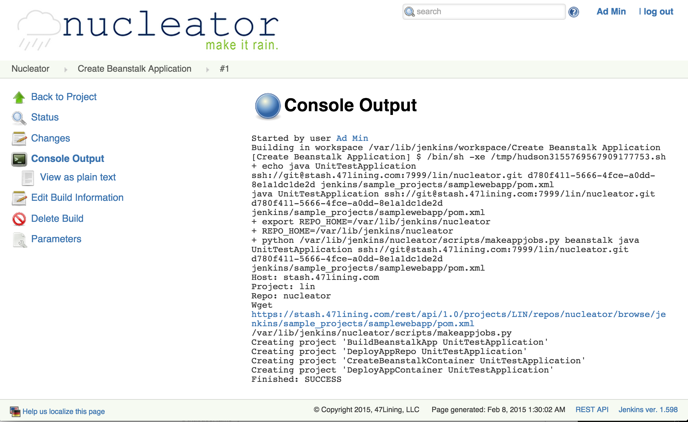

Create a Stackset
Based on the types of Stacksets defined to the system, there are Nucleator projects available to build any of the known Stackset types. This page will give two examples, a Beanstalk Stackset and a RedShift Stackset.
Beanstalk Stacksets
These are Java or Python applications deployed to an AWS Beanstalk via the Artifactory repository. It assumes your code is in a Git repository. For Java projects, we assume there is a Maven project to manage the application. For Python applications, all the files in the Git repository are zipped for deployment to the binary repository (Artifactory).
Create Stackset/Application
Run the "Create Beanstalk Application" project and supply these parameters:
Validate the creation
You can check the console output for the details of the build. It should say "Finished: SUCCESS" at the end.

Because deployment of applications to Beanstalk Stacksets is a multiple step operation, several new Nucleator UI projects have been created which enable each of the steps in that process:

Now for Beanstalk Stacksets, you are ready for the next step: Create a Deployment Environment for an Application
RedShift Stacksets
Create the Stackset
This project is different than the Beanstalk creation because all the information required to create the Stackset is collected up front and the deployment target is created.